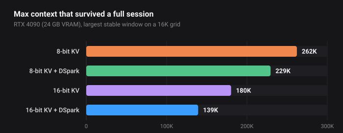
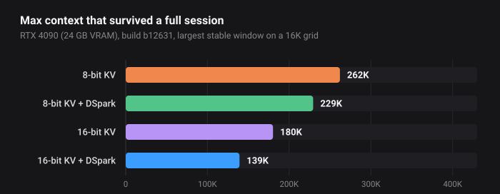
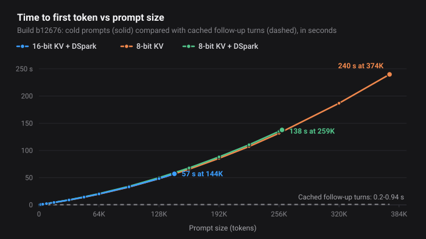
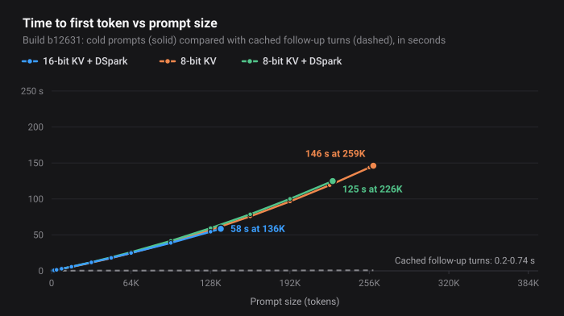
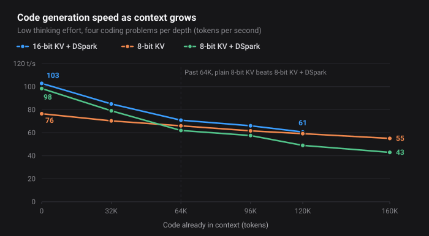
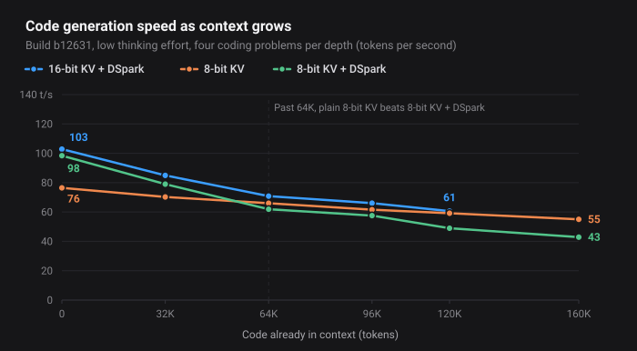

Local LLMs 23 Nov 2026
Running Inkling-2-Mini on an RTX 4090 with llama.cpp
Update (25 Nov 2026): I reran everything on Unsloth’s
b12676-mix-c32dcc8build and the main takeaway flipped: 8-bit KV + DSpark is now the fastest setup at every depth. Use the tabs on any chart below to switch betweenb12676and the originalb12631run, and skipb12649on 24 GB (it used 1.5-2 GB more VRAM and OOMed at 262K).
Last week Thinking Machines Lab released Inkling-2-Mini. Since its release it has been getting a lot of attention (rightly so!). Firstly, because it is the best model you can run on your local machine with as little as ~12 GB VRAM, sort of dethroning Qwen3.8-27B as the go-to local model. Secondly, because it is a sparse MoE model with 26.4B total parameters and 3.4B active (~5.4B effective active parameters per token to account for looping). Local inference is mostly memory-bandwidth bound, so only activating a small fraction of the weights per token gives you the best of both worlds: the capability of a ~26B model at the generation speed of a much smaller one.
I can genuinely say that it is the best local model since Qwen3.8 and honestly I can even go as far as saying that it feels on par with Claude Sonnet 5.5 to me.
In one of my earlier posts this year, I walked through deploying a local model on a 24 GB GPU on my RTX 4090 workstation and using it from my Mac. I followed the same approach here, though I am using the Unsloth desktop app instead of OpenCode. It is a great app for local LLM inference, very easy to set up and switch between models. I would highly recommend giving it a try. If you like, you can also hook it up to OpenCode like in my Qwen post, though I have not tried it there yet.
Inkling-2-Mini supports up to a 1M token context window but on a 24 GB card VRAM decides how much you actually get. Before settling on a daily setup for coding agents, I wanted to find the best context length and server settings for a 4090 with acceptable performance. This is a quick post walking through what I tested and the configs I ended up with.
Benchmarking
When deploying a coding model on 24 GB of VRAM, three things decide whether it feels good to use:
- Max usable context: how much context fits in VRAM without running out of memory mid-session.
- Time to first token (TTFT): how long you wait for the model to read your prompt and start replying.
- Generation speed (tok/s) at long context: how fast it writes code as the session grows, especially once you pass 64K-100K tokens.
In llama.cpp there are a few flags you end up tuning to balance speed against context size:
- KV cache precision (16-bit vs 8-bit): By default llama.cpp uses a 16-bit KV cache. Switching to 8-bit (
--cache-type-k q8_0 --cache-type-v q8_0) roughly cuts KV cache memory in half so you can fit a lot more context on the same card. - Speculative decoding (DSpark draft model): If a model supports MTP or has a draft model available, you can use speculative decoding to speed up generation. For Inkling-2-Mini there is a tiny 0.4-0.5 GB DSpark draft model so I tested it here. It speeds up generation at every depth in exchange for some VRAM headroom.
- Micro-batch size (
-ub): This controls how many prompt tokens hit the GPU at once during prefill.-ub 2048processes prompts ~20% faster than-ub 512(~4,730 vs ~3,940 tok/s on an 8K prompt) but cuts usable context sharply (262K down to 163K on 8-bit KV + DSpark), so-ub 512stays the better choice for long sessions. - Concurrent slots (
--parallel): Each slot splits your VRAM and throughput. Since I am running on a single 24 GB card and am the only person using this server, it is always best to set it to--parallel 1.
Benchmark results
All numbers below are from single runs on my RTX 4090, using slices of real C++ source code (from the llama.cpp repo) to fill the context instead of synthetic dummy tokens.
How much context fits on 24 GB


One catch if you download from Hugging Face today: Unsloth’s re-uploaded 0.5 GB drafter (dspark-Inkling-2-Mini-Q8_0.gguf) matches the original 0.4 GB one on speed (dspark-Inkling-2-Mini-Q8_0_Old.gguf, plotted above) but uses ~0.7 GB more VRAM, bringing the DSpark limits down to 229K (8-bit KV) and 131K (16-bit KV). Single prompts can also still trick you: with the new drafter 8-bit KV + DSpark survived one 244K prompt, then crashed early in the multi-turn session.
Switching to 8-bit KV nearly doubles usable context (196K to 376K), and even with DSpark enabled you still get 229K-262K tokens on 24 GB.
Time to first token (TTFT)


All three setups track almost identically until each hits its VRAM ceiling. In a 12-turn tool calling session starting at 41K tokens, only the first cold turn felt slow (12.3 s, down from 15.8 s on b12631) while cached turns 2-12 finished in a median of 1.2-1.5 s.
Cold TTFT depends almost entirely on prompt size, while cached follow-up turns stay under 1 s at every depth.
Code generation speed as context grows


This is where b12676 flips the story from b12631. Before, 8-bit KV + DSpark fell behind plain 8-bit KV past 64K. On b12676 every setup is faster, and 8-bit KV + DSpark gained up to 67% at long context so it now leads at every depth up to 160K.
On
b12676, 8-bit KV + DSpark gives a ~34% boost on short prompts and stays the fastest setup all the way to 160K.
Thinking effort and tool calls
A couple of smaller things came up while testing that still hold on b12676:
- Keep
--reasoning-effort lowas the default: In my tests,lowkept replies snappy while still letting any client bump it up with"reasoning_effort": "high"when needed. Setting effort tononestill made the model think and was slower thanlow, and--reasoning-budget 0broke tool calling pretty badly. - Switching effort mid-session clears the prompt cache once: Changing thinking effort partway through a 40K token session made the server reread the whole history (11.9 s to first token on
b12676, down from 15.2 s before).
Possible configuration options
Putting all of that together on b12676, here is how the three configs compare on a 24 GB card:
| Config | Setup | Context | Speed at 0 / 64K / 120K / 160K (tok/s) | Peak VRAM |
|---|---|---|---|---|
| Recommended | 8-bit KV + DSpark | 196K | 119 / 98 / 82 / 72 | 21.9 GB |
| Long context | 8-bit KV | 262K | 89 / 75 / 67 / 62 | 21.5 GB |
| 16-bit KV + DSpark | 16-bit KV + DSpark | 131K | 117 / 89 / 76 / n/a | 22.4 GB |
Peak VRAM for the DSpark rows uses the 0.4 GB drafter; the 0.5 GB drafter adds ~0.7 GB.
Honestly, on b12676 the choice is much simpler:
- Recommended (8-bit KV + DSpark, 196K) is the clear daily setup. It is the fastest across every depth and fits comfortably with either drafter.
- Long context (8-bit KV, 262K-376K) is only needed if sessions regularly pass 229K-262K tokens, though cold prompts take ~132 s at 256K and ~240 s at 374K.
- 16-bit KV + DSpark (131K) no longer has a speed case: it is equal or slower at every depth with a smaller window, and sits right on the VRAM limit with the 0.5 GB drafter.
Running it with llama.cpp
Follow Unsloth’s Inkling-2-Mini guide to download UD-Q4_K_XL (17.6 GB) and the Q8_0 DSpark drafter, and grab release b12676-mix-c32dcc8 or newer from their llama.cpp releases instead of b12649.
Here is the Recommended config (8-bit KV + DSpark at 196K context):
BIN=~/llama.cpp-unsloth/b12676
MODELS=~/MODELS/unsloth/Inkling-2-Mini-GGUF
export LD_LIBRARY_PATH="$BIN:${LD_LIBRARY_PATH:-}"
$BIN/llama-server \
-m $MODELS/Inkling-2-Mini-UD-Q4_K_XL.gguf \
--model-draft $MODELS/dspark-Inkling-2-Mini-Q8_0.gguf \
--spec-type draft-dspark --spec-draft-n-max 2 --n-gpu-layers-draft 99 \
--cache-type-k q8_0 --cache-type-v q8_0 \
-c 196608 -ub 512 -ngl 99 -fa on --parallel 1 --jinja \
--reasoning-effort low \
--temp 1.0 --top-p 1.0 --top-k 0 --min-p 0.0 \
--alias inkling-2-mini \
--host <YOUR_GPU_SERVER_IP> --port 8080 \
--no-slots --no-webui- For more context with DSpark, raise
-cto229376(or262144withdspark-Inkling-2-Mini-Q8_0_Old.gguf). - For Long context (262K-376K), drop the
--model-draftand--spec-typelines and set-cto262144(up to376832).
Even at 196K you only have 1.5-2 GB of VRAM free depending on the drafter, so try not to run anything else heavy on the GPU at the same time 🙈.